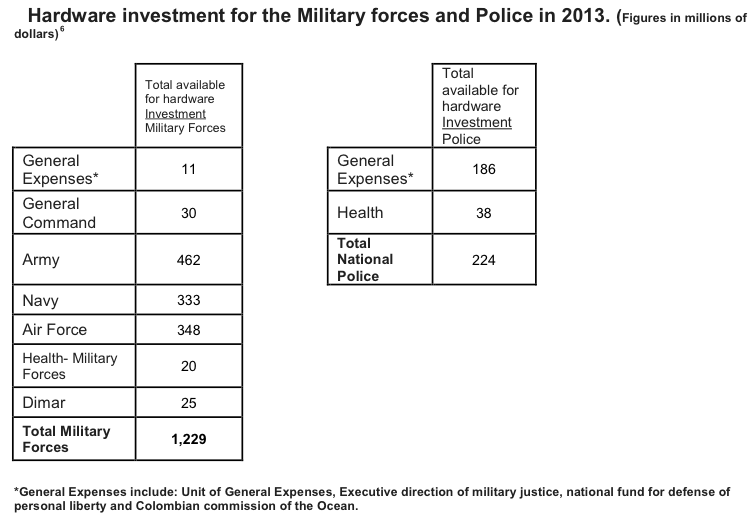

Colombia’s internal and external defense and security structure includes the Army, Navy (includes Marines and Coast Guard), Air Force, and the National Police. The total military spending increased from US$ 14.7 billion in 2012 to US$ 15.1 billion in 2013 7 (this figure includes, not only hardware investment indicated in the tables above, but also the addition of other budgets such as all cost related to the functioning of military forces, the police, their public benefits, the functioning of Satena Airlines, military housing, and other costs). The total military spending has been on average 3.7 percent of the country’s total GDP (2009 to 2013)8. Under Plan Colombia, significant U.S. funding, technical assistance, and equipment support has been provided to Colombian- led counter narcotic programs for drug eradication and interdiction, and expansion of the capacity of Colombian military and police. The current format of Plan Colombia expired in 2012, with the consequent nationalization of military programs by the Colombian government. For 2014 some spending may shift to drug eradication and peace keeping programs, especially if the peace negotiations that are currently undergoing with the FARC Rebel forces in Cuba are achieved. Despite the peace negotiations process, the Colombian government is expected to continue military actions and spending to fight
narco-terrorism, and gain security area through its police force, especially to develop security surveillance and enforcement in remote and isolated regions of the country.
Through the Foreign Military Sales Trust Fund, the U.S. Department of Defense (DOD) provides equipment and training to the Colombian military and police through military assistance programming. The Department of State (DOS), military sales, and the international narcotics control program are other sources of funding. The Bureau of International Narcotics and Law Enforcement Affairs has been the main source of funding for equipment acquisition in Colombia since 1990, through private military consulting firms. These firms operate through an open market competitive bidding system. However, U.S. funding is expected to significantly decrease at a rate of 10 percent per annum over the next five years. The Colombian congress approved Law 80 of 1993, under which procurement of goods and services for security and national defense made in Colombia by local manufacturers, must be purchased over goods made by foreign manufacturers and exporters9. However, under the National Treatment Caveat, Chapter 9 United States-Colombia bilateral trade agreement (FTA), U.S. companies must be treated as locals when they participate on public bids eliminating the disadvantage they used to face prior to the signing of the agreement.
In 2002, the Colombian government created a Wealth Tax to collect US$ 800 million from large companies and wealthy individuals, 70 percent of which was used to increase 2002-2003 defense spending. A similar tax in 2007- 2011 collected close to US$ 3.7 billion, of which a significant portion funded defense spending. The Colombian Army receives 60 percent of the funding, followed by the Air Force with 25 percent and the National Police with 10 percent.
The United States has had a privileged relationship with Colombia in regards to military equipment acquisitions; however, new competitors from England, France, South Korea, and Spain have gained some notoriety. The Colombian military tends to use standardized equipment and values relationships, trust and familiarity with equipment (as exemplified by their consistent use of the same type of rifles). However, foreign manufacturers are gaining market share. According to the unofficial estimates, U.S. imports represent close to 50 percent of the total imports of military equipment.
The Colombian military keeps high standards for its equipment, which historically was a great opportunity for American products. However, the United States could lose market share in the future due to pricing and more competitive bidding from foreign manufacturers. U.S. manufactured equipment is already losing market share for personal arms, with more rifles currently being bought from Australia, Belgium and Russia. Additional examples of non U.S. military products being used in Colombia include: British-made Hoover Crafts, French 105mm Obuses, and local Colombian manufacturing of various products including aluminum flat boats.
Best prospects include trucks and light armored vehicles (LAV-4x4 and 8x8), engines and turbines, military apparel and footwear, fixed-wing and rotary wing aircraft helmets,
anti-IEDs (improvised explosive devices), IED and mine detectors, body armor and personal body armor equipment, handheld navigation systems, Unmanned Aircraft Vehicles (UAV), GPS, modern communication systems (MCS), IT-structure platforms, logistics software solutions and software applications, flight simulators, air cruise control, flat bottom aluminum river boats, and marine and coastal surveillance systems and equipment.
In regards to services, there is a significant need for security assistance, maintenance and assistance to the Army, Police and Air Force. Helicopter and fixed-wing aircraft maintenance and repair services are especially in need. In 2014 Colombia’s fleet of Sikorsky AH 60L will most likely be undergoing overhauls.
The Colombian military has potential in the fields of specialized training for all new communications systems, medical training, and environmental training for hazardous material (HAZMAT) management, transport, process and disposal of HAZMAT, expertise in demolition, technical support for reconnaissance and analysis, and security operations.
Military equipment trends have remained the same post-Plan Colombia, since the government continues to support drug interdiction and eradication efforts. Due to the significant improvement of national security, the Colombian Air Force has been more involved with military and civilian rescue operations. In 2010 the Air Force created a new rescue unit and continues to purchase rescue equipment and life support systems. The National Police is expanding its activity in civilian and urban surveillance, adapting its force and upgrading its equipment to this environment. Recent navy purchases have shown the government’s interest to increase the guarding of the Caribbean coast, especially around the islands of San Andres and Providencia, an area in which there is a territorial dispute between Colombia and Nicaragua. There is also interest from the Ministry of Defense to purchase close to 20 fighter jets, some of the possible candidates may include the F-16 and F-18 Hornet. However, this has been put on hold until further notice in 2014.
In 1990, the USG provided 18 UH- 1N helicopters, buying 36 more over the years. In 2010, the Colombian military had 280 helicopters and 200 fixed-wing aircraft with no major new purchases projected until 2015 with the exception of possible interest to purchase helicopters with higher capacity to transport troops and equipment. Due to recent aircraft acquisitions, there are significant opportunities for training, parts and maintenance for these aircraft, especially for Blackhawk rotor blades repair services and erosion-resistant coating systems. Other opportunities include: parameter security protection systems (convoy security, security walls and fences, and video surveillance systems), safety, survival accessories, search and rescue equipment, protective clothing, emergency medical equipment, and trauma-life support systems.
The security forces number about 435,000 uniformed personnel: 285,000 in the military and 150,000 in the police. From 2012 to 2015, key needs will be armament and personal arms (up to US$ 1 million a year), night vision goggles (up to US$ 1 million a year), anti-ballistic missiles (ABM) (up U$D1 million a year), survival equipment and kits
(up to US$ 400,000 a year), flight suits, footwear (up to US$ 200,000 a year), personal arms (M4 rifles, M9 pistols), grenades, binoculars, and medical equipment. The Colombian army is looking into upgrading its equipment and uniforms, with engineered textile solutions, smart textile materials, as well as integrated communication aircraft helmets.
On May 15, 2012 the FTA agreement between the United States and Colombia entered into effect. 80 percent of U.S. exports of consumer and industrial products to Colombia are duty-free immediately upon entry into force, with remaining tariffs phased out over ten years. Other provisions include strong protection for U.S. investors (legal stability), expanded access to service markets, greater intellectual property rights protection, market access for remanufactured goods, increased transparency and improved dispute settlement mechanisms (arbitration). The majority of defense and military equipment have no tariffs since the implementation of the FTA. Prior to the agreement tariffs ranged between 5 and 20 percent.
CS Bogota contact:
Camilo Gonzalez
Commercial Specialist
U.S. Commercial Service
U.S. Embassy Bogotá, Colombia
Tel: 011-571-275-2764 / fax: 011-571-315-2190/71
E-mail: camilo.gonzalez@trade.gov
Colombian Ministry of National Defense: www.mindefensa.gov.co/irj/portal/Mindefensa
Colombian Government: www.gobiernolinea.gov.co
Expodefensa: www.expodefensa.com.co/
Security Fair Colombia: http://securityfaircolombia.com/
Medellin Aviation Fair: http://www.f-aircolombia.com.co/